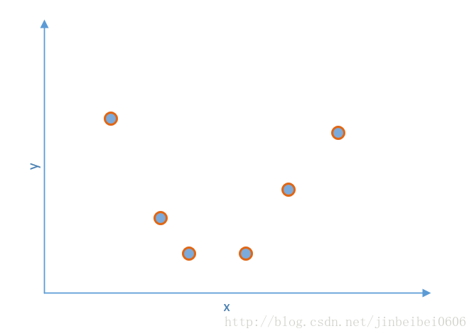
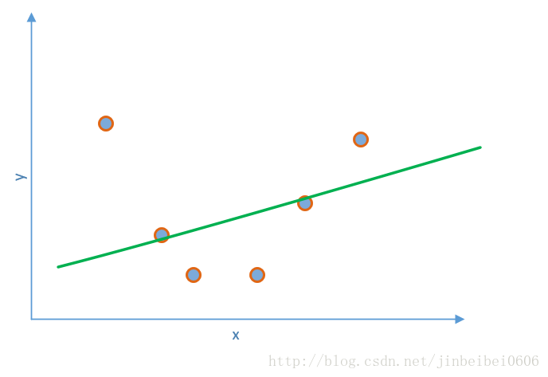
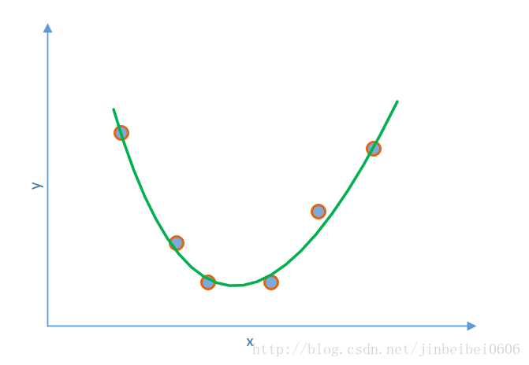
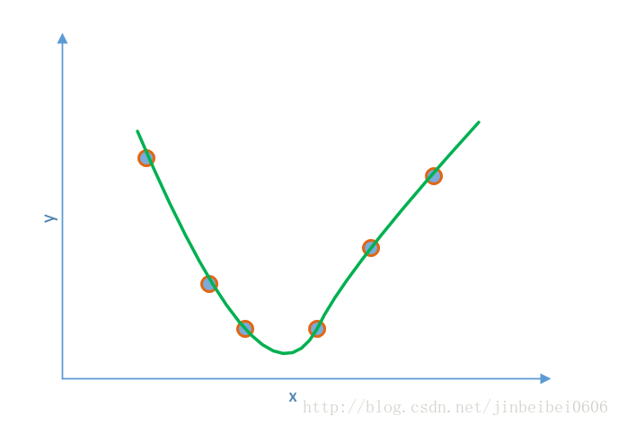
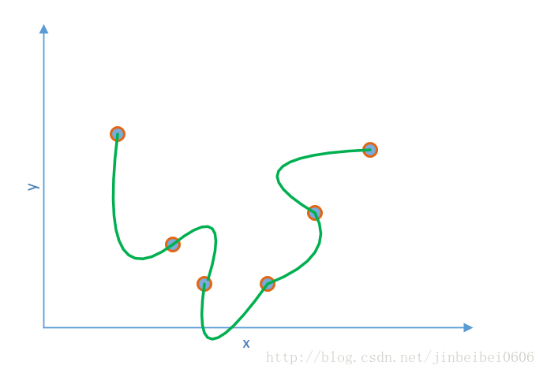

为了理解正则化在深度学习中的作用，我以回归问题为例来进行理解。

如图，假设我们现在要根据图中的六个点拟合出数据的分布曲线，用于预测其他x坐标对应的y值，我们使用如下的多项式进行拟合：
y=a0+a1*x+a2*x^2+a3*x^3+…
假如一开始，只有a0和a1不为0，其他系数a都为0，拟合函数就变成了：y=a0+a1*x, 拟合曲线如下：

由于此时的系数比较少，曲线不够灵活，所以此时拟合的误差较大，损失函数较大。
如果我们再增加一个不为0的系数a2, 拟合函数变成了：y=a0+a1*x+a2*x^2, 拟合曲线如下：

这时的拟合效果已经非常好了，但注意仍然有一些数据点的中心不在拟合曲线上，即损失函数值大于0。
假如此时再增加一个不为0的系数a3, 拟合函数变成了：y=a0+a1*x+a2*x^2+a3*x^3, 注意每次增加一个不为0的系数，相当于是拟合函数变得更加的灵活。这时拟合曲线可能如下：

此时拟合函数经过每一个数据点的中心，损失函数为0。但拟合函数的形状已经有些奇怪了。
如果我们继续增加更多的不为0的系数，拟合函数曲线甚至可能变成这样：

拟合函数非常精确的经过了每一个数据点且此时的损失函数值为0，但使用这个拟合函数来预测新的x点对应的y的值可能不会取得非常好的结果。联想之前我们学过的泛化性能，这里的泛化性能会非常差。或者说，这里出现了过拟合（overfitting）。
我们的深度神经网络模型就可能会出现这个问题，虽然在训练集上的损失函数值已经非常低，甚至为0，但可能仍然无法在验证/测试集上获得很好的泛化性能。
为了避免过拟合，就需要我们这里的正则化（regularization）, 在solver.prototxt里像下面这样设置正则化参数：
regularization_type: “L2”
weight_decay:0.0001
那么具体正则化是如何防止过拟合发生的呢？实际上，这里的正则化，是通过在前向计算的过程中，将网络中所有的参数的平方与weight_decay相乘，再加到损失函数值上；而反向传递梯度时，则仍然根据链式法则对参数进行更新。
比如这里的weight_decay为0.0001，假设只有一个参数a=3，则损失函数值计算时就变成了：L=L0+0.0001*3^2=L0+0.0009，这里的L0是不添加正则化时的损失函数值。反向传递梯度时，对参数的更新就变成了a=a-lr*(d0+2*0.0001*3), 其中d0是不添加正则化时的梯度值，而2*0.0001*3是误差函数中的正则化项对参数求导（梯度）的结果。实际上，由于这里的a值就是3，之前的式子可以直接改成：a=(1-lr*2*0.0001)*a-lr*d0。合理的设置学习速率lr和正则化参数weight_decay的值，可以使(1-lr*2*weight_decay)的值小于1，这样的效果实际上是使得参数a值每次都以一定的比例缩小, 防止参数变得过大。这样可以在一定程度上使高次项的系数变小，从而防止高次项对整个模型的影响过大。从而最终达到防止过拟合的目的。
正则化在这里属于稍难的内容，如果你不需要非常深刻的理解深度学习而只是想能够实际上手，可以暂时不去深究正则化的原理，只需要记住caffe里的这两个参数是用来进行正则化，从而提高模型效果就行了。
regularization_type设置为L2就是代表对损失函数加上参数的平方项，还可以将其设置为L1，这样加上的就是参数的绝对值。（实际上，这里的L2代表的是2-范数，而L1代表的是1-范数）